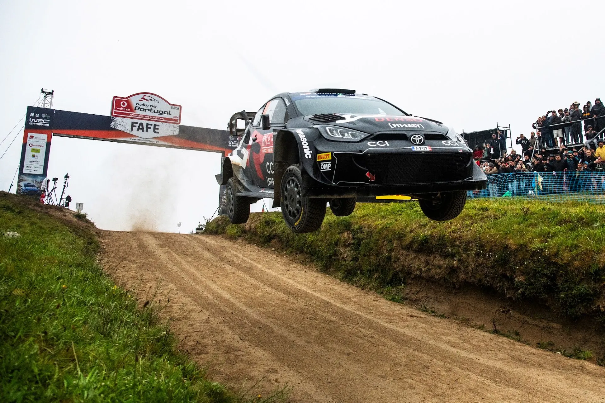
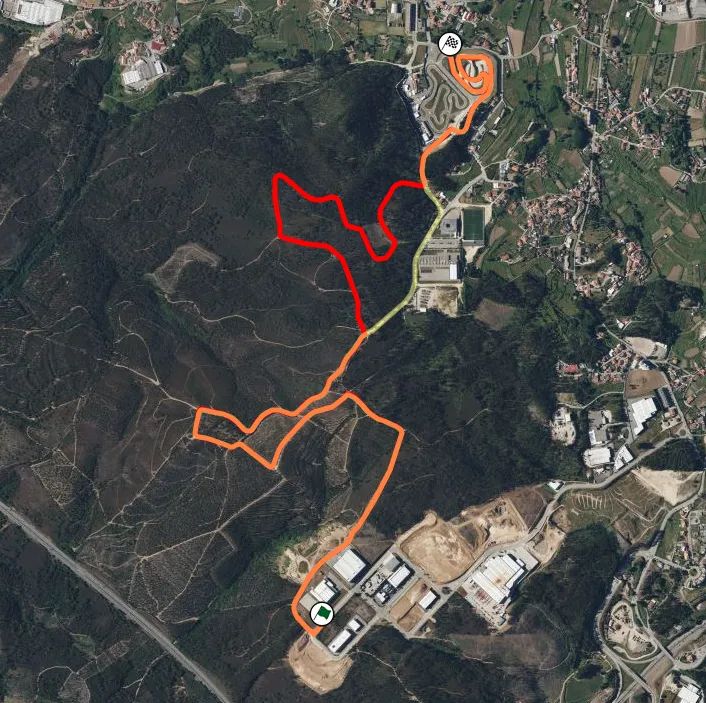
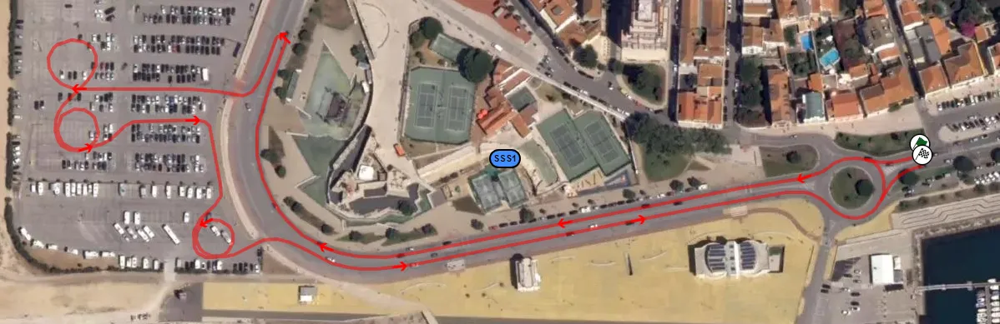
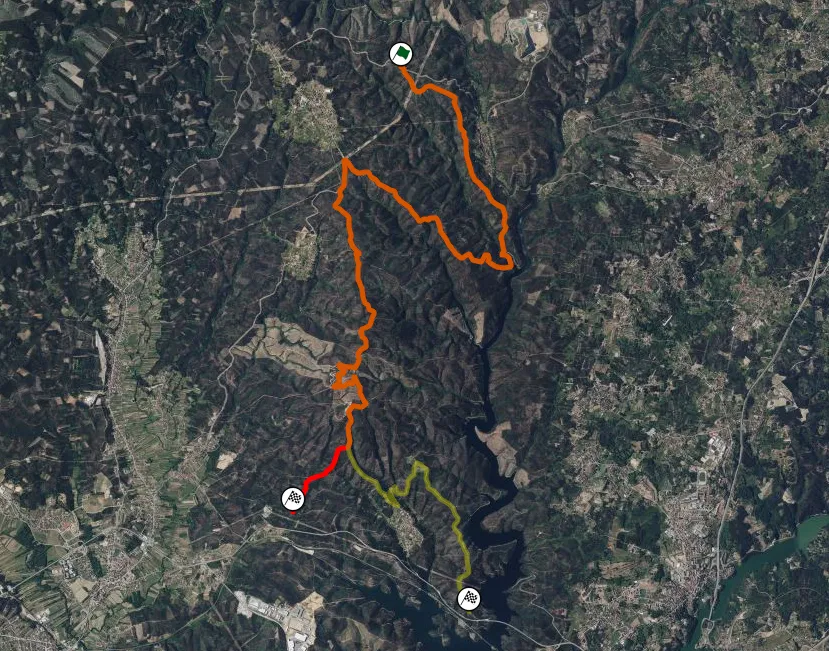
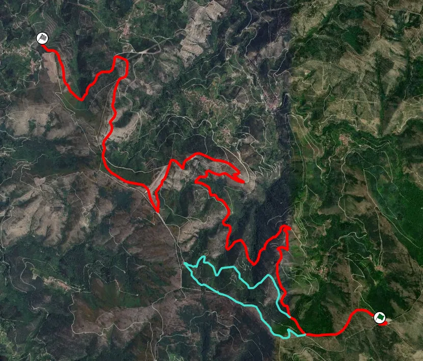
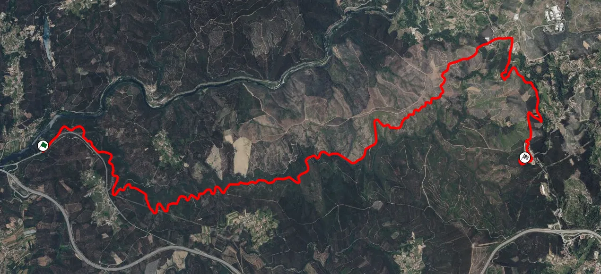
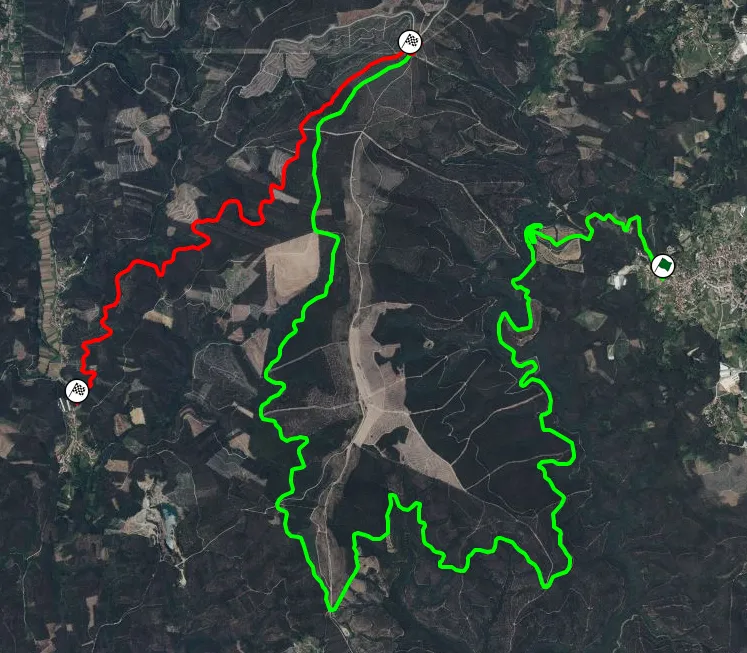
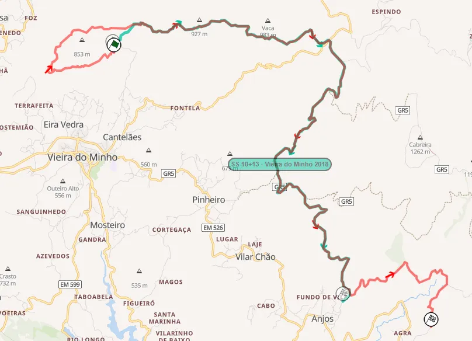
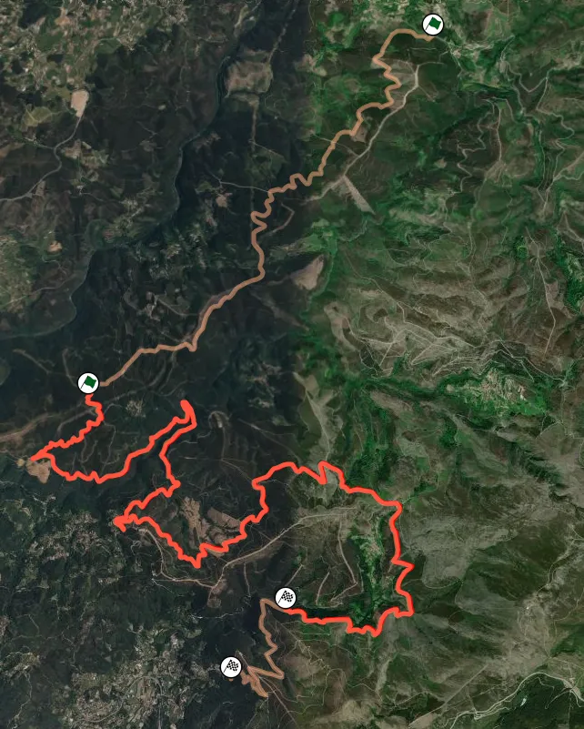
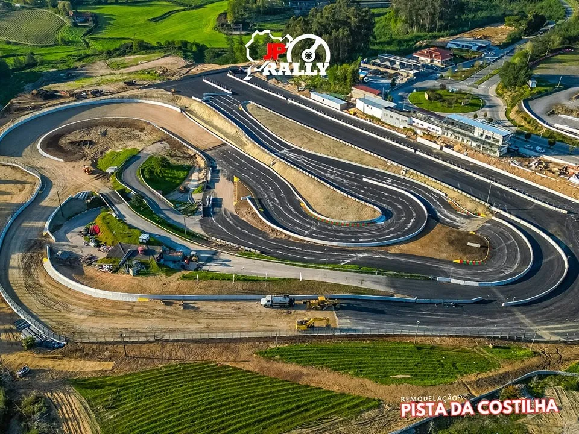

Rally Portugal 2025 - Route Preview
Cover and thumbnail: Jaanus Ree / Red Bull Content Pool
Maps: Rally-Maps.com and Dimitri Dusart
The WRC travels to Portugal for the 5th round of the season. Rally Portugal has seen some changes to its route, including two new stages on Friday, with the rally's opening day having 10 stages and 3 loops!
Iconic stages like Arganil, Amarante, Vieira do Minho, Cabaceiras de Basto and Fafe all feature in the event's route. Montim, the stage where Kalle Rovanpera crashed out of the lead last year, does not appear in this year's itinerary.
Thursday
The first day of the rally features a pass through the Baltar Shakedown, as well as an SSS in the south of Portugal in Figueira da Foz.
Shakedown: Baltar - 6.26km
Changes compared to 2024: Almost the same as last year's Shakedown, only this year it uses a section that was also used in SS Paredes in 2024.

Map of the Shakedown (red) compared to last year's Shakedown (yellow)
Stage Description: The Shakedown is mostly representative of the rally’s route. It’s on a smooth surface, with fast sections and junctions for the first 2 kilometres, before a more technical section following, including the part from last year’s Paredes stage. The ending is on the Baltar Rallycross track.
SSS1: Figueira da Foz - 2.94km
Changes compared to 2024: It’s the same SSS as last year.

Stage Description: Last year this stage was criticised by driver’s due to the amount of donuts, with them complaining that they couldn’t put on a show for the fans because they wanted to preserve their tyres for the rally proper on Friday. This year there’s a tyre fitting zone after SSS1.
The stage itself is two loops of going up and down a coastal avenue, with the crews having to do a series of donuts in a car park. Last year Sami Pajari damaged his suspension by hitting one of the barrels in the parking lot.
Friday
Friday sees a lot of changes compared to 2024, featuring 3 loops with a total of 10 stages, including two brand new ones. There’s a remote service after both runs of Arganil, with the crews having to make their way from the south of Portugal to the rally’s HQ in Matosinhos. This is the first rally to feature more than 10 stages in one day since Rally Estonia in 2020. Friday is also the longest day of the rally, at 149 competitive kilometers.
SS2/9: Mortagua - 14.53km
Changes compared to 2024: The same stage that was used in 2024, until 13.29km where it turns right instead of left, with the final 1.3km being on a road never used before. The section where Thierry Neuville crashed out in 2021, and where Elfyn Evans had a big crash in 2023 does not feature this year. The stage was ran twice last year for the first time, and will be ran twice this year as well.

Map of this year's Mortagua stage (red) compared to last year's stage (dark green)
Stage Description: The first 3.6km are on a fast mostly smooth medium wide road. After a pass over a narrow bridge, the stage becomes technical and slower for 2 kilometers, after which it again becomes fast.
At 7.35km there’s a small tarmac section that leads onto a new road at 7.8km. The stage remains fast, again on a medium wide road. At 10.95km the stage turns to a technical section for spectators, with a big jump and a series of hairpins following. After that the stage becomes faster, using a new section from 13.29km onwards.
SS3/6: Lousã - 12.28km
Changes compared to 2024: It’s the same stage as last year.
Stage Description: The stage starts on a stretch of tarmac before turning onto a gravel road via a tight hairpin. Sebastien Loeb broke his suspension here in 2022 from the lead of the rally. It’s initially sandier compared to the previous test, and a lot bumpier, while also being technical and slow, almost to its entirety. Many parts are deep in the forest, meaning there are some sections that can retain humidity if it rains before the event.
The stage opens up momentarily as it reaches its highest altitude at 4.22km, passing next to a firebreak, with it also becoming less loose in parts for the next 4 kilometers, but still technical and slow for the most part. At 8.04km, the road becomes wider, with a series of downhill hairpins following, with the stage finishing after a slightly faster section.
SS4/7: Góis - 14.30km
Changes compared to 2024: It’s the same stage as last year.
Stage Description: The first part is in the forest and it’s quite technical, with the road being medium speed/slow. Shortly after, the stage opens up, and becomes a lot faster as it climbs up the mountain. From 2.72 to 5.1km, the cars pass through an open plateau.
Following that, the stage goes downhill, and becomes more technical. After a downhill hairpin at 10.82km, it becomes very slow and sinuous and also narrower towards the finish.
SS5/8: Arganil - 14.41km
Changes compared to 2024: The stage turns right instead of left at 1.5km, skipping over a technical section that lasted for about 5km. The stage returns to the route used in 2019, which was the first time it was used in the WRC since 2001.

Map of this year's stage (red). With turquoise is the section that's absent for 2025.
Stage Description: Arganil is one of the most legendary stages of this rally, being ran as a 50+km stage in the Group B era.
More recently, we saw Sebastien Ogier running out of spare tyres and retiring in 2022, and the Hyundais of Dani Sordo and Sebastien Loeb suffering issues with their i20s fuel pressure, and dropping out of contention in 2019. Last year Teemu Suninen had a big crash here also.
This year’s stage starts off on a road with a couple of crests, with a big jump at about 1km in, known as the PPD House jump.
It then proceeds onto a narrower road, with a technical and slow downhill section which includes some very tight hairpins. At 3.48km the road becomes smoother, but still remains technical and also narrow initially, with big armco barriers running alongside the stage. At 7.2km it becomes wider and faster, joining the route of the old Arganil stage at 9.47km.
A flat out section follows, before the stage becomes narrower and technical at about 11km, with a big drop on the driver’s right. It then becomes faster again momentarily, before it again features a sequence of slow and technical corners at 13km. After that, it’s fast until the finish.
SS10: Águeda / Sever - 15.08km
Changes compared to 2024: A brand new stage, never used before in Rally Portugal.

Map of Águeda / Sever
Stage Description: Unfortunately at the time of writing this post, there is no onboard available for this stage, and most of the description is made from satellite images, and descriptions from locals.
Most of the stage is on a very narrow and technical gravel road, with three seperate small tarmac sections. SS9 and SS10 were both badly affected by last year's fires in the region, so there will be a lot of burnt trees next to the route.
The first section is in the forest and is quite "closed" with many trees next to the road, with a small tarmac section leading the cars to another very narrow road that is very twisty and mostly slow.
At 9.87km it becomes faster for a bit, and just after that the stage goes on tarmac again as it passes through a village. It leaves this narrow tarmac road via a tight hairpin at 12.3km
A steep uphill section follows, with the end of the stage being at the Sever do Vouga Rallycross track, which used to be an old service area for the rally in the 90s.
SS11: Sever / Albergaria - 20.24km
Changes compared to 2024: New stage, parts of it haven’t been used in decades. It’s similar to the 1998 stage with the same name, only extended by 6 kilometers to the finish.

Map of the old stage in green, with the new part used for the first time this year in red
Stage Description: The stage was repaired and widened before the rally, and has had some of the burnt sections cut down. This is the stage where Francois Delecour rolled in 1995.

The first section of the stage is technical but flowing, on a sandy surface, At 9.34km there is a known spectating spot from the 90s, called Casa do Guarda, where the stage opens up and you can see the cars for a long time.
After that the stage continues to be technical, becoming faster at 12.66km. At 15km there's a tight hairpin, with the cars joining a new road, which was used for testing for WRC2 crews most recently.
Images from the hairpin and nearby sections
Luis Alves on Facebook
That road is initially fast, but becomes twisty and technical, and is open for the most part.
All of this road is downhill, which will be quite tricky as the last stage of a long day.
Saturday
Saturday features two loops of three legendary repeated stages, Vieira do Minho, Cabeceiras de Basto and Amarante. The day ends with a pass through the iconic, revamped for this year, Lousada Super Special Stage. Vieira do Minho returns after a year’s absence, in place of Montim, and Amarante is shortened from 37, to 22km.
SS12/15: Vieira do Minho - 17.69km
Changes compared to 2024: Returns after a year’s absence. The 2025 edition is the same as the 2018 one, and compared to 2023 it’s shortened by 5km to the start, and by 5km to the finish.

Map of the 2023 stage (red) compared to the 2018 version (blue) which is the same as this year
Stage Description: Vieira do Minho starts off with a narrow but fast opening 800m, before joining the “main road”, where it becomes more technical. It becomes faster 5 kilometers in, with a jump also. At 6.74km the stage has a small flat-out tarmac section, after which it uses a narrow and fast road, which widens after a tricky technical section at 8.1km.
After that the stage is mostly fast featuring a man-made jump at 12.18km, after which it becomes more technical and also narrow in places.
SS13/16: Cabeceiras de Basto - 19.91km
Changes compared to 2024: Identical stage to 2024, using the new section that was introduced last year for the first time.
Stage Description: Cabeceiras de Basto was used on Sunday last year, with Gregoire Munster and Sami Pajari crashing out of the rally, and Elfyn Evans having issues on the second pass.
The first 5km are on a fast uphill road, with the stage reaching up to 1100m in altitude. There’s an open and wide section in a plateau at the highest point, after which the stage then becomes downhill, and narrow again, as it rejoins the forest. It then becomes slow and technical at 10km, a character that it retains until the finish.
From 10.89 to 11.76km there’s a very narrow tarmac section, with a return to gravel following, with a very tight hairpin. That road is narrow and technical, but also fast from 12.7km. The stage becomes bumpy and rough, with a very tight hairpin also at 14.7km. It remains technical and slow until the finish.
SS14/17: Amarante - 22.10km
Changes compared to 2024: The stage is shortened from 37 to 22 kilometers, skipping over the first 11km, and a tarmac and cobbled section.

Map of the 2025 stage (red) compared to the 2024 version (light pink)
Stage Description: Amarante is a classic Rally Portugal stage, and it’s one of the most well known stages from this rally. Last year, Takamoto Katsuta broke his suspension and retired here, and in the past, Ott Tanak has lost a potential win twice on this stage, damaging his suspension and retiring from the lead in 2021 and dropping to 5th in 2017.
The start is technical and slow, but the stage shortly after becomes wider and faster, while still remaining technical. It also passes through a cobbled bridge at 5km. A tarmac section follows at 7km, with this twisty stretch lasting for about 2 kilometers.
The stage rejoins a gravel road at 8.8km via a hairpin, with said road being twisty and mostly narrow and slow. At 15km, there’s another tarmac section, on a narrow and bumpy surface, before again becoming gravel at 16.3km, with the stage being downhill until the finish.
The subsequent fast section amongst the trees is where Kris Meeke’s career with Citroen ended, after the Northern Irishman suffered a massive crash.
SSS18: Lousada - 3.52km

Image from JP Rally Lousada
Changes compared to 2024: The stage is changed compared to last year, after the Rallycross circuit received a facelift.
Stage Description: The head to head super special uses the mixed surface RX circuit, with the joker now being on tarmac instead of gravel. The circuit features mostly long medium speed corners as well as tight junctions and hairpins.
Sunday
The last day of Rally Portugal again features 3 repeated stages, with the Power Stage as ever being in Fafe. There’s no service, only a regroup before the last stage.
SS19/22: Paredes - 16.09km
Changes compared to 2024: The stage is identical to the one used in 2024.
Stage Description: Paredes is a relatively new stage in the history of this rally, using newly made roads, and first appearing in 2023. It shares some of its route with the Shakedown stage. On this stage last year, Ott Tanak got a puncture and lost the lead, and Kris Meeke crashed out of the rally on the second pass.
The first part of the stage is fast on a wide to medium wide road, before becoming very technical and slow at 3.52km, with it becoming narrower at 6km. That part of the stage is in the forest and is slow, rough and sinuous, with many slow corners and hairpins, going downhill. It becomes smoother again shortly after, before it again becomes rough and narrow at 8.17km, going uphill.
The stage is technical and twisty, with some fast parts also until it joins the RX track at 15.3km, after which it follows the route of the track just like the Shakedown did.
SS20/23: Felgueiras - 8.81km
Changes compared to 2024: The stage is identical to the one used in 2024.
Stage Description: A small downhill technical section at the start is followed by a fast one, after which a series of cambered turns follows. It remains fast, but also technical until 6.6km, after which it becomes twisty and slow until the finish.
Gus Greensmith crashed out of the lead in WRC2 on this stage last year, and Andrea Aghini crashed out from 3rd in 1993, back when the stage was called “Santa Quiteria”.
SS21/24: Fafe - 11.18km
Changes compared to 2024: The stage is identical to the one used in 2024.
Stage Description: Fafe is what most people first think of when Rally Portugal is mentioned. The iconic Fafe jump first appeared back in 1984, and since then it's been a staple of the event, with the stage gathering huge crowds. The stage is more than just the jump though, having claimed many drivers, including Kris Meeke and Sebastien Loeb in 2019, Teemu Suninen crashing out of the lead in WRC2 in 2022 as did Andreas Mikkelsen in 2017.
Gus Greensmith and Quentin Gilbert are some of the people that have had big crashes at the stage's jump.
The initial getaway is on tarmac, with the stage turning to gravel shortly after. This part is a mix of fast and more technical parts, with long corners and a nice flow. A small tarmac section follows, after which the stage becomes fast and wide, on an open section, passing next to wind turbines.
The stage then becomes narrower, with a big jump at 8.25km. After that it becomes more twisty for a bit, before joining the tarmac momentarily, leaving it via the iconic hairpin.
A series of medium speed long corners follows, before the iconic jump and the finish of the stage.
What I would change
Overall I am a fan of this route, oftentimes Rally Portugal's route has been a bit copy paste from previous edition, with the last big change coming in 2019, when the event incorporated the Lousa-Gois-Arganil loop on Friday. So the addition of the two stages near Sever do Vouga is definitely a plus.
That being said, I am not the biggest fan of Águeda / Sever. Maybe a stage like Ladário - Oliveira de Frades which was ran alongside the Sever - Albergaria stage that's used this year back in 1999, or something like a Mortazel/Laceiras stage from Rali de Mortagua.
Another change I would make would be on Sunday's stages. I would replace Paredes with Luilhas which was used back in 2018, with Felgueiras now being the day's opener.


Comments